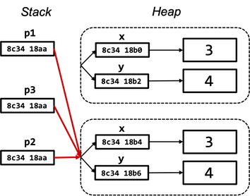

Methodenstack¶
Programme und die dazugehörigen Variablen (und deren Werte) befinden sich zur Ausführung im Arbeitsspeicher. Der Speicher ist in Blöcke (Bytes) unterteilt, die jeweils adressierbar sind. So könnte alles jeweils eine Adresse zugeordnet werden und mit einer komplexen Adressverwaltung ließen sich die Einzelteile ansprechen. Das ist jedoch viel zu aufwendig und inperformant. Deshalb werden Speichermodelle verwendet, die die Verwaltung der Programmteile erleichtern. Ein solches Speichermodell ist der Stack (Stapelspeicher).
Bei einem Stack gilt das Last in first out (LIFO) Prinzip, also das, was zuletzt in den Stack kam, muss auch als erstes wieder hinaus. tatsächlich gibt es nur ganz wenige Funktionalitäten, um einen solchen Stack zu verwalten:
push: Element oben auf den Stack hinzufügenpop: Element von oben aus dem Stack entfernentop(manchmal auchpeekgenannt): auf oberes Element zugreifen (lesen, aber im Stack belassen)
Folgende Abbildung stellt diese Methoden grafisch dar:

Für einen solchen Stack gibt es jetzt nur drei Möglichkeiten:
- Element
Ekann gelesen werden (aber im Stack belassen) -top - Element
Ekann aus dem Stack entfernt werden -pop - ein neues Element (z.B.
F) kann zum Stack hinzugefügt werden -push(dann kann auchEnicht mehr gelesen werden; so wie bereitsA-D)
Abarbeitung von Methoden¶
Wir betrachten das Speichermodell Stack, weil die Abarbeitung von Methoden nach diesem Prinzip funktioniert. Methoden, die abgearbeitet (aufgerufen) werden, werden in einem solchen Stack angeordnet. Wir betrachten ein Beispiel:
1 2 3 4 5 6 7 8 9 10 11 12 13 14 15 16 17 18 19 20 21 22 23 24 | |
In diesem Beispiel gibt es drei Methoden:
- die
start()-Methode mit der Variablenva, - die
a()-Methode mit den Variablenvaaundvabund - die
b()-Methode mit den Variablenvbaundvbb.
Die start()-Methode ruft die Methode a() auf und die a()-Methode ruft die b()-Methode auf.
Die Ausgabe des Programms ist wie folgt:
start() --> va = 0
+--a() --> vaa = 0 vab = 1
+----b() --> vba = 0 vbb = 1
start() --> va = 1
+--a() --> vaa = 1 vab = 1
+----b() --> vba = 1 vbb = 1
start() --> va = 2
+--a() --> vaa = 2 vab = 1
+----b() --> vba = 2 vbb = 1
Die start()-Methode ruft also drei Mal (innerhalb der Schleife) die a()-Methode auf, welche wiederum die b()-Methode aufruft.
Bei dem Aufruf von Methoden passiert folgendes:
- bei jedem Methodenaufruf wird eine Methodeninstanz auf den Stack gelegt
- eine Methodeninstanz sind alle zur Laufzeit veränderlichen Daten, die zur Methode gehören (Parameter und lokale Variablen)
- nach Abarbeitung der Methode (oft durch
return- muss aber nicht, wie in unserem Beispiel) wird die Methodeninstanz wieder aus dem Stack entfernt (und somit auch alle dazu gehörenden Daten (Parameter, lokale Variablen und deren Werte))
In unserem Beispiel passiert also folgendes:


- Die
start()-Methode wird ausgeführt; die Variablevawird erzeugt und bekommt den Wert0. Diestart()-Methode erzeugt eine Ausgabe auf die Konsole und ruft dann die Methodea()auf. - Die
a()-Methode wird ausgeführt; die Variablenvaaundvabwerden erzeugt und bekommen die Werte0und1. In dera()-Methode erfolgt eine Ausgabe auf die Konsole. Diea()-Methode ruft die Methodeb()auf. - Die
b()-Methode wird ausgeführt; die Variablenvbaundvbbwerden erzeugt und bekommen die Werte0und1. In derb()-Methode erfolgt eine Ausgabe auf die Konsole. Danach ist die Ausführung derb()-Methode zu Ende. Alles, was mit derb()-Methode zu tun hat, insb. die Variablenvbaundvbbwerden aus dem Speicher gelöscht. - Zurück zur Ausführung von
a(). Keine weitere Anweisung - die Ausführung dera()-Methode zu Ende. Alles, was mit dera()-Methode zu tun hat, insb. die Variablenvaaundvabwerden aus dem Speicher gelöscht. - Zurück zur Ausführung von
start(). Die Variablevabekommt innerhalb der Schleife den neuen Wert1. - Die Variable
vahat nun den Wert1. Diestart()-Methode erzeugt eine Ausgabe auf die Konsole und ruft dann die Methodea()auf. - Die
a()-Methode wird ausgeführt; die Variablenvaaundvabwerden erzeugt und bekommen die Werte1und1. In dera()-Methode erfolgt eine Ausgabe auf die Konsole. Diea()-Methode ruft die Methodeb()auf. - Die
b()-Methode wird ausgeführt; die Variablenvbaundvbbwerden erzeugt und bekommen die Werte1und1. In derb()-Methode erfolgt eine Ausgabe auf die Konsole. Danach ist die Ausführung derb()-Methode zu Ende. Alles, was mit derb()-Methode zu tun hat, insb. die Variablenvbaundvbbwerden aus dem Speicher gelöscht. - Zurück zur Ausführung von
a(). Keine weitere Anweisung - die Ausführung dera()-Methode zu Ende. Alles, was mit dera()-Methode zu tun hat, insb. die Variablenvaaundvabwerden aus dem Speicher gelöscht. - Zurück zur Ausführung von
start(). Die Variablevabekommt innerhalb der Schleife den neuen Wert2. - Die Variable
vahat nun den Wert2. Diestart()-Methode erzeugt eine Ausgabe auf die Konsole und ruft dann die Methodea()auf. - Die
a()-Methode wird ausgeführt; die Variablenvaaundvabwerden erzeugt und bekommen die Werte2und1. In dera()-Methode erfolgt eine Ausgabe auf die Konsole. Diea()-Methode ruft die Methodeb()auf. - Die
b()-Methode wird ausgeführt; die Variablenvbaundvbbwerden erzeugt und bekommen die Werte2und1. In derb()-Methode erfolgt eine Ausgabe auf die Konsole. Danach ist die Ausführung derb()-Methode zu Ende. Alles, was mit derb()-Methode zu tun hat, insb. die Variablenvbaundvbbwerden aus dem Speicher gelöscht. - Zurück zur Ausführung von
a(). Keine weitere Anweisung - die Ausführung dera()-Methode zu Ende. Alles, was mit dera()-Methode zu tun hat, insb. die Variablenvaaundvabwerden aus dem Speicher gelöscht. - Zurück zur Ausführung von
start(). Die Variablevabekommt innerhalb der Schleife den neuen Wert3. Die Bedingung der Schleifeva<3ist somitfalse. Die Schleife wird verlassen, keine weitere Anweisung instart(). Die Abarbeitung des Programms ist zu Ende. Alles, was mit derstart()-Methode zu tun hat, insb. Variablevawird aus dem Speicher gelöscht.
Lebensdauer und Sichtbarkeit von lokalen Variablen¶
Die Variablen, die wir bis jetzt verwendet haben, wurden in Methoden deklariert oder in Anweisungsblöcken, die in Methoden liegen (z.B. in for-Schleifen). Bei solchen Variablen sprechen wir von lokalen Variablen. Wir werden später noch globale Variablen kennenlernen. Zunächst interessieren uns aber nur die lokalen Variablen. Das obige Beispiel zeigt, dass lokale Variablen, also solche, die in Methoden deklariert werden, nur so lange existieren, wie diese Methode ausgeführt wird. Generell gilt:
Eine Variable existiert in dem Anweisungsblock, in dem sie deklariert wurde, solange dieser Anweisungsblock ausgeführt wird.
Schauen wir uns dazu die Situationen in dem oberen Beispiel an:
- Die Variable
vawird in derstart()-Methode deklariert. Diestart()-Methode wird die ganze Zeit ausgeführt. Also existiert auch die Variablevadie gesamte Zeit des Programmablaufs. - Die Variablen
vaaundvabwerden in dera()-Methode deklariert. Sie existieren immer nur dann, wenn diea()-Methode ausgeführt wird. In unserem Beispiel existieren die Variablenvaaundvabalso drei Mal (sie werden drei Mal erzeugt und drei Mal wieder vollständig gelöscht). Da die Methodea()die Methodeb()aufruft, existieren die Variablenvaaundvabauch während der Ausführung vonb(), da zur Zeit der Ausführung vonb()ja aucha()ausgeführt wird (undstart()). - Die Variablen
vbaundvbbwerden in derb()-Methode deklariert. Sie existieren immer nur dann, wenn dieb()-Methode ausgeführt wird. In unserem Beispiel existieren die Variablenvbaundvbbalso drei Mal (sie werden drei Mal erzeugt und drei Mal wieder vollständig gelöscht).
Die Lebensdauer eine Variable wird somit von der Ausführungsdauer des Anweisungsblockes bestimmt, in dem die Variable deklariert wurde.
Lebensdauer
Es ist eine gängige Praxis, alle Variablen, die man in einer Methode verwenden möchte, am Anfang der Methode zu deklarieren. Erstens sieht man dann, welche Variablen innerhalb der Methode alle verwendet werden und zweitens kann man diese Variablen in allen Anweisungsblöcken innerhalb der Methode verwenden. Einzige Ausnahme stellen Laufvariablen der for-Schleifen dar. Diese werden häufig direkt in der for-Schleife deklariert (for(int i=0, i<10; i++){}). Sie existieren dann aber auch nur in dieser for-Schleife! Außerhalb der for-Schleife existiert diese Variable dann nicht (mehr)! Das bedeutet auch, dass wenn Sie diese Variable in einer anderen for-Schleife verwenden wollen, müssen Sie sie dort erneut deklarieren.
Unter Sichtbarkeit einer Variablen versteht man die Möglichkeit, auf diese Variable zuzugreifen (also ihr entweder einen neuen Wert zuzuweisen oder ihren Wert auszulesen). Generell gilt:
Eine lokale Variable ist in dem Anweisungsblock sichtbar, in dem sie deklariert wird und in allen Anweisungsblöcken, die sich in diesem Anweisungsblock befinden. Außerhalb des Anweisungsblockes, in dem die Variable deklariert wurde, ist die Variable nicht sichtbar.
Das heißt für unser Beispiel, dass die Variable va nur in der start()-Methode sichtbar ist (also nur dort auf sie zugegriffen werden kann/sie nur dort verwendet werden kann), die Variablen vaa und vab nur in der a()-Methode verwendet werden können (sichtbar sind) und die Variablen vba und vbb nur in b().
Sichtbarkeit
Der Vorteil dieser lokalen Sichtbarkeit besteht darin, dass man sich z.B. keine Sorgen machen muss, ob eine gleichnamige Variable evtl. bereits in einer anderen Methode deklariert wurde. Eine Variable darf ja immer nur einmal deklariert werden. Da alle anderen Variablen aber nicht in der eigenen Methode sichtbar sind, gibt es keinerlei Konflikte mit anderen lokalen Variablen. Die lokalen Variablen aus anderen Methoden haben mit den Variablen aus der eigenen Methode gar nichts zu tun. Außerdem ist es auch nicht möglich, einfach Werte von Variablen aus anderen Methoden zu schreiben oder zu lesen. Das würde ansonsten große Sicherheitsprobleme mit sich bringen und man könnte Programme auch leicht zum Absturz bringen.
Werte- vs. Referenztypen¶
Es ist ganz wichtig, zu verstehen, dass es ganz wesentliche Unterschiede zwischen Werte- und Referenztypen gibt. Einige der Unterschiede sind in der folgenden Tabelle aufgelistet:
| Wertetypen | Referenztypen | |
|---|---|---|
| Beispiele | int, double, boolean, char, long, float, byte, short |
String, Point, Triangle, Circle, Adresse, System, ... |
| neue erzeugbar? | nein | ja - einfach eigene Klasse erstellen |
| Was ist der "Wert" einer Variablen? | ein Wert (5, true, 1.234, 'a', ...) |
die Referenz auf ein Objekt |
| Manipulation von Werten | mit Operatoren (+, ==, &&, ...) |
mit Methoden |
variable1 = variable2; |
Kopie des Wertes (variable1 hat den Wert und variable2 hat den Wert) |
Kopie der Referenz auf das Objekt (beide Variablen zeigen auf das gleiche Objekt) |
Insbesondere den letzten Punkt wollen wir uns genauer anschauen. Zunächst Wertetypen. Angenommen, wir haben folgende Anweisungen:
int a = 5;
int b = a;
Nach Abarbeitung dieser Anweisungen hat sowohl die Variable a den Wert 5 als auch die Variable b. Wenn wir nun a=6; setzen, dann hat a den Wert 6 und b immer noch den Wert 5.
Der Wert einer Variablen von einem Wertetyp kann sich nur durch den Zuweisungsoperator
=ändern!
Folgende Abbildung zeigt die Verwaltung der beiden int-Variablen a und b im Speicher:

Die Zahlen in den Kästchen unter a und b stehen für Speicheradressen. Das Gute an Java ist, dass wir uns um solche Adressen nicht kümmern müssen. Wir greifen auf die Werte von a und b einfach über die Variablennamen a und b zu. Die Speicherdressen interessieren uns dabei (zum Glück) gar nicht. Wichtig ist, dass jede Variable ihren eigenen Wert hat. Wenn wir den Wert von a ändern, ändert sich nur der Wert von a, wenn wir den Wert von b ändern, ändert sich nur der Wert von b. Dabei ist ganz egal, ob b den Wert 5 durch die Wertzuweisung b=5; erhalten hat oder durch b=a;, wobei a den Wert 5 hatte.
Anders ist es bei Referenzvariablen, also bei Variablen, die von einem Referenztyp sind. Nehmen wir z.B. unsere Klasse Point und führen folgende Anweisungen aus:
Point p1 = new Point(3,4);
Point p2 = p1;
Hier gibt es genau ein Objekt, nämlich das Objekt, in dem die Objektvariablen x und y den Wert 3 bzw. 4 haben. Die beiden Variablen p1 und p2 referenzieren das gleiche Objekt, d.h. sie zeigen darauf. Die folgende Abbildung verdeutlicht diesen Fall:

Beide Variablen p1 und p2 zeigen auf dasselbe Objekt. Es gibt ja auch nur ein Objekt. Ein Objekt kann nur durch new und die Angabe des Konstruktors erzeugt werden. Das passiert hier genau einmal. Während also bei int b = a; eine Kopie des Wertes erfolgt, erfolgt bei Point p2 = p1; eine Kopie der Referenz (aber keine Kopie des Objektes!).
Wichtig ist jetzt noch zu wissen, dass wir auf die Objekteigenschaften des Point-Objektes sowohl über die Referenz p1 als auch über die Referenz p2 zugreifen können, d.h. dass z.B. p1.print() und p2.print() exakt die gleiche print()-Methode aufrufen, nämlich die des obigen Point-Objektes. Sowohl p1.getX() als auch p2.getX() geben 3 zurück, da sie den Wert derselben Objektvariablen x abfragen.
Wenn mehrere Referenzen auf dasselbe Objekt existieren, ist es egal, über welche Referenz wir auf die Objekteigenschaften zugreifen; es handelt sich um genau ein Objekt (mit mehreren Referenzen darauf).
Wir müssen nun also wissen, dass bei den folgenden Anweisungen
int a = 5;
int b = a;
b = 4;
System.out.println(a);
der Wert von a ausgegeben wird und der ist 5, denn es gibt genau eine Wertzuweisung für a und das ist a=5;. Es spielt gar keine Rolle, ob b seinen Wert zwischendurch ändert oder nicht - bei der Anweisung b = a; ist der Wert 5 kopiert worden und der Wert von a ist danach völlig unabhängig von b und umgedreht.
Wir müssen nun auch wissen, dass bei den folgenden Anweisungen
Point p1 = new Point(3,4);
Point p2 = p1;
p2.translate(1,2);
System.out.println(p1.getX());
der Wert der Objektvariablen x des einen Objektes ausgegeben wird, das existiert. Durch die translate()-Methode ist der x-Wert des Objektes nun 4 (und der y-Wert ist 6). Das heißt, es wird eine 4 ausgegeben. Dabei ist völlig egal, ob die translate()-Methode über die Referenz p1 oder über die Referenz p2 aufgerufen wird und es ist auch völlig egal, ob die print()-Methode über die Referenz p1 oder über die Referenz p2 aufgerufen wird. Beide referenzieren dasselbe Objekt.
Arrays sind (auch) Objekte!¶
Schauen wir uns folgenden Fall an:
int[] a1 = { 3, 4 };
int[] a2 = a1;
a2[1] = 5;
System.out.println(a1[1]);
Arrays sind (auch) Objekte. Also haben wir hier den gleichen Fall, wie bene bei Point. Auch referenzieren sowohl a1 als auch a2 dasselbe Array (es gibt ja nur eins). Wenn wir also über die Referenz a2 den zweiten Wert im Array auf 5 setzen und wir danach über die Referenz a1 den zweiten Wert dieses Array auslesen, dann ist er 5.
Sie werden sich jetzt sicherlich fragen, warum wir uns überhaupt Kopien der Referenzen machen - das ist doch nur verwirrend. Die Antwort ist, dass dieser Fall sogar sehr oft vorkommt, nämlich immer genau dann, wenn wir Referenzen von Objekten als Parameter übergeben. Schauen wir uns folgendes Beispiel an:
1 2 3 4 5 6 7 8 9 | |
Diese Methode implementiert das Vertauschen zweier Elemente in einem int-Array. So, wie wir es z.B. in vielen Sortieralgorithmen benötigen. Die Werte der Elemente an den Indizes index1 und index2 werden miteinander getauscht. Wir speichern den einen Wert zwischen, damit wir ihn nicht überschreiben. Es wird vorab geprüft, ob die beiden Indizes index1 und index2 überhaupt im Array arr existieren.
Angenommen, wir haben nun in der start()-Methode (oder einer anderen Methode) folgende Anweisungen
1 2 3 4 5 6 | |
2 1 3 4 5
Wir übergeben bei Aufruf der Methode swap(a1, 0, 1); die Referenz auf das Array und in der Methode wird die lokale Variable arr mit genau dieser Referenz initialisiert, d.h. es existieren dann zwei Referenzen auf das Array! Die Referenz arr innnerhalb der swap()-Methode und die Referenz a1 innerhalb der start()-Methode. Zwei Referenzen, aber nur ein Objekt!
Lösen Sie die folgenden Übungsaufgaben durch Überlegen!
Was wird ausgegeben? (start() wird ausgeführt)
public void swap(int a, int b)
{
int tmp = a;
a = b;
b = tmp;
}
public void start()
{
int a = 3;
int b = 4;
swap(a, b);
System.out.println(a);
}
Was wird ausgegeben?
public class I
{
private int o;
public I(int o)
{
this.o = o;
}
public int getO()
{
return this.o;
}
public void add1()
{
o++;
}
}
public void doSomething(I i2)
{
i2.add1();
}
public void start()
{
I i1 = new I(1);
I i2 = i1;
i2.add1();
I i3 = i1;
doSomething(i3);
System.out.println(i1.getO());
System.out.println(i2.getO());
System.out.println(i3.getO());
}
Das "Leben" der Objekte¶
Wir haben uns bereits eingehend mit der Lebensdauer und der Sichtbarkeit von lokalen Variablen beschäftigt. Es ist dabei übrigens gaz egal, ob es sich um Variablen von einem Werte- oder einem Referenztyp handelt. Auf die Lebensdauer und Sichtbarkeit hat das keinen Einfluss.
Wir wissen auch bereits, dass Objektvariablen für jeweils ein Objekt existieren. Die Lebensdauer einer Objektvariablen entspricht also der Lebensdauer ihres Objektes. Wir wissen auch über die Sichtbarkeit der Objektvariablen Bescheid, denn sie sind in der gesamten Klasse sichtbar, in der sie deklariert werden, also auch in allen Methoden dieser Klasse. Ob sie darüber hinaus auch über eine Referenz auf ein Objekt in anderen Klassen sichtbar sind, hängt vom Sichtbarkeitsmodifizierer ab. Normalerweise nicht, denn wir deklarieren alle Objektvariablen als private.
Wir wollen nun untersuchen, wie lange Objekte existieren. Wir wissen bereits, dass ihre Existenz mit der Anweisung new gefolgt vom Konstruktor beginnt.
Wir haben gelernt, dass Methoden in einem sogenannten Stack abgearbeitet werden und dass in diesem Stack auch die lokalen Variablen existieren - und zwar so lange, so lange die Methode abgearbeitet wird, also im Stack existiert. Sichtbar sind jedoch nur die lokalen Variablen, die zur Methode gehören, die im Stack ganz oben liegt, also gerade abgearbeitet wird. Objekte werden nicht im Stack abgelegt. Der Speicherbereich für Objekte nennt sich Heap. Wir wollen auf die Speicherstruktur des Heap gar nicht weiter eingehen, wichtig ist nur, dass bei Erzeugung eines Objektes Speicherplatz im Heap für das Objekt reserviert wird. Die Größe des reservierten Speicherplatzes bestimmt der Konstruktor und ist von den Objektvariablen des Objektes abhängig, also von der Größe und der Anzahl der Objektvariablen1. Die Objektvariablen existieren auf dem Heap. Lebt das Objekt nicht mehr, wird der Speicherplatz auf dem Heap (automatisch) freigegeben.
Wir wissen, wann Objekte anfangen, zu existieren (wenn sie erzeugt werden), aber wann hören Sie auf, zu existieren? Wir betrachten "das Leben" eines Objektes am Beispiel eines Point-Objektes:
-
Objekt-Referenz deklarieren
public void start() { Point p1; }Damit ist bereits eine Referenz mit dem Namen
p1auf einPoint-Objekt definiert. Das Objekt existiert aber noch gar nicht! Aber es sind schonmal 64Bit im Heap reserviert.Die (Referenz-)Variable
p1ist eine lokale Variable der Methodestart().p1ist nur in derstart()-Methode sichtbar, sie existiert so lange, solangestart()ausgeführt wird und sie existiert im Stack. -
Objekt erzeugen
public void start() { Point p1 = new Point(3,4); }Jetzt existiert ein
Point-Objekt! Es wird im Heap abgelegt. Insbesondere werden die Objektvariablenxundyim Heap abgelegt und bekommen die Werte3und4.Jetzt gibt es eine Referenzvariable
p1im Stack und ein Objekt mit Objektvariablen im Heap. Durch den Zuweisungsoperator=werden die beiden miteinander verbunden, d.hp1zeigt jetzt auf dasPoint-Objekt.
An dieser Stelle ist es schonmal sinnvoll zu betonen, dass die einzige Möglichkeit, auf das
Point-Objekt zuzugreifen, derzeit über diep1-Variable existiert. Gäbe es diese Variable nicht, hätten wir keinen Zugriff auf das Objekt! -
Ein weiteres Objekt und eine Referenz darauf erzeugen
Wir erzeugen zur Veranschaulichung ein weiteres Objekt und die Referenzvariable
p2, die darauf zeigt.public void start() { Point p1 = new Point(3,4); Point p2 = new Point(3,4); }Jetzt existieren zwei
Point-Objekte im Heap und zwei Referenzvariablenp1undp2, die jeweils auf eines der beiden Objekte zeigen.p1undp2sind lokale Variablen derstart()-Methode und existieren im Stack.
Beachten Sie, dass die beiden Objekte zwar Objektvariablen haben, die gleiche Werte aufweisen, aber es handelt sich um zwei (verschiedene) Objekte!
-
Eine weitere Referenz erzeugen
Jetzt erzeugen wir noch eine weitere Referenz auf das erste
Point-Objekt. Wir nennen die Referenzvariablep3.public void start() { Point p1 = new Point(3,4); Point p2 = new Point(3,4); Point p3 = p1; }Diese Situation lässt sich so veranschaulichen:

Auf das erste Objekt existieren also gleich zwei Referenzen. Über beide Referenzen kann mittels Punktnotation auf das Objekt (dessen Objekteigenschaften) zugegriffen werden. Es ist also egal, ob man
p1oderp3schreibt, beide zeigen auf das gleiche Objekt. -
Eine Referenz ändern
Wir ändern nun die soeben erstellte Referenz und lassen sie nun auf das zweite Objekt zeigen:
public void start() { Point p1 = new Point(3,4); Point p2 = new Point(3,4); Point p3 = p1; p3 = p2; }p3darf natürlich nicht erneut deklariert werden. Wir kopieren die Referenz vonp2nachp3.p3zeigt damit nun auf das zweite Objekt.Nun zeigen
p2undp3auf dasselbe Objekt. Nun ist es also egal, ob manp2oderp3schreibt, beide zeigen auf dasselbe - das "zweite" - Objekt. Auf das "erste" Objekt zeigt nur nochp1. -
Eine weitere Referenz ändern
Nun lassen wir auch noch
p1auf das zweite Objekt zeigen.public void start() { Point p1 = new Point(3,4); Point p2 = new Point(3,4); Point p3 = p1; p3 = p2; p1 = p2; // exakt gleich zu p1 = p3; }Die nun entstandene Situation lässt sich wie folgt veranschaulichen:

Der entscheidende Punkt ist nun der, dass es auf das erste Objekt keine Referenz mehr gibt. Damit ist das Objekt für uns verloren - wir haben keinen Zugriff mehr darauf!
Was passiert mit einem solchen Objekt? Es wird aus dem Speicher gelöscht. Dies erfolgt automatisch. Die Laufzeitumgebung erkennt solche Objekte, auf die keine Referenz mehr zeigt. Die sogenannte Garbage Collection gibt diesen Speicher wieder für die weitere Verwendung frei. In Java müssen wir uns - im Gegensatz zu anderen Programmiersprachen - nicht um die Speicherfreigabe kümmern. Das erfolgt im Hintergrund und ganz automatisch.
Neben der Änderung einer Referenz kann eine Referenzvariable auch aufhören, zu existieren und damit ist ein Objekt ohne Referenz. Das folgende Beispiel zeigt einen solchen Fall:
public void createPoint()
{
Point p = new Point(3,4);
}
public void start()
{
createPoint();
}
In der start()-Methode wird die createPoint()-Methode aufgerufen. Darin wird eine Referenz p erzeugt und ein Point-Objekt. p zeigt auf dieses Objekt. Sobald die Methode abgearbeitet ist und verlassen wird, hört die lokale Variable p jedoch auf zu existieren. Sie wird aus dem Stack gelöscht. Somit ist das Point-Objekt im Heap ohne eine Referenz und muss von der Garbage Collection entsorgt werden.
Erweitern Sie obiges Programm so, dass eine Referenz auf das Point-Objekt nicht verloren geht
Der null-Wert¶
Zeigt eine Referenzvariable auf kein Objekt, so ist ihr Wert null. Beispiel:
public void start()
{
Point p1; // p1 hat den Wert null
}
Die Referenzvariable p1 vom Typ Point existiert bereits, aber es existiert (noch) kein Point-Objekt, auf das sie zeigt. Somit ist der "Wert" der Referenzvariable p1 null. Referenzvariablen können auch explizit auf null gesetzt werden:
public void start()
{
Point p1 = new Point(3,4); // Point-Objekt existiert, p1 zeigt auf das Point-Objekt
p1 = null; // p1 zeigt auf kein Objekt (mehr) - das Point-Objekt wird von der GC entsorgt
}
Im oberen Beispiel wurde die p1-Referenzvariable vom Typ Point deklariert und ein Point-Objekt. Die p1-Variable referenziert (zeigt auf) das Point-Objekt. Danach wird p1 explizit der "Wert" null zugeordnet. Die p1-Variable zeigt auf kein Point-Objekt mehr. Da das Point-Objekt nun keine Referenz mehr auf sich hat (und somit nicht mehr verwendet werden kann), wird es durch die Garbage Collection entsorgt.
Referenzvergleiche mit ==¶
Wir kennen den Operator == als logischen Vergleichsoperator von Werten, z.B. können wir int-Werte damit vergleichen oder char-Werte oder boolean-Werte usw. Der Vergleichsoperator == kann auch für Referenzvergleiche verwendet werden, aber Achtung!, es handelt sich dann ausschließlich um Referenzvergleiche und nicht um eine Gleichheit von Objekten (dazu verwenden wir später equals()). Beispiele:
public void start()
{
Point p1 = new Point(3,4);
Point p2 = new Point(3,4);
Point p3 = p1;
System.out.println(p1 == p2); // false - nicht die gleiche Referenz (zwei verschiedene Objekte)
System.out.println(p1 == p3); // true - die gleiche Referenz (ein Objekt)
Point p4;
System.out.println(p4 == null); // true - keine Referenz auf ein Objekt
System.out.println(p1 != null); // true - Referenz auf ein Objekt, deshalb ungleich null
}
Es ist eigentlich ungünstig, den Gleichheitsoperator == von Werten auch für Referenzen zu verwenden, da dies am Anfang verwirrend sein kann. Wichtig ist, dass der "Wert" einer Referenz die Referenz(-adresse) auf ein Objekt ist. Haben zwei Referenzvariablen den gleichen "Wert", dann zeigen sie auf dasselbe Objekt (und somit ist == true). Der Gleichheitsoperator == prüft nicht die Gleichheit von Objekten (z.B. beide x-variablen 3 und beide y-Variablen 4 - das erledigen wir später, indem wir die equals()-Methode überschreiben)!
Wird der Vergleichsoperator
==für Referenztypen verwendet, so wird nur die Gleichheit von Referenzen verglichen, nicht aber die Gleichheit von Objekten!
Success
Wir haben zwei Aspekte diskutiert, die beide sehr wichtig für das Verständnis der objektorientierten Programmierung sind. Einerseits den Unterschied zwischen Werte- und Referenztypen und andererseits, dass ein Objekt aufhört, zu existieren, sobald es keine Referenz mehr gibt, die auf dieses Objekt zeigt. Insbesondere das Verständnis über den Unterschied zwischen Werte- und Referenztypen ist wirklich wichtig, um die Konzepte der objektorientierten Programmierung gut verstehen zu können!
-
Ein
Point-Objekt besteht z.B. aus zweiint-Variablen (xundy) und benötigt somit 2 x 32Bit, also 64Bit. ↩